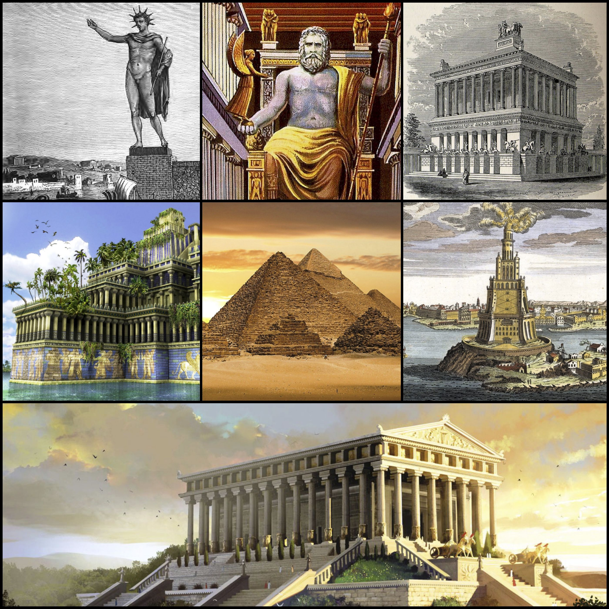

Tabela nowych 7 cudów świata
| Cud |
Państwo |
| Wielki Mur Chiński |
Chińska Republika Ludowa |
| Petra |
Jordania |
| Statua Chrystusa Zbawiciela |
Brazylia, Rio de Janeiro |
| Machu Picchu |
Peru, Cuzco |
| Chichén Itzá |
Meksyk, Yucatán |
| Koloseum |
Włochy, Rzym |
| Tadź Mahal |
Indie, Agra |

Lista 7 cudów świata starożytnego
- Piramida Cheopsa (lub ogółem wielkie piramidy w Gizie)
- Świątynia Artemidy w Efezie
- Mauzoleum królewskie w Halikarnasie
- Kolos z Rodos
- Wiszące ogrody Semiramidy
- Latarnia morska z Aleksandrii
- Posąg Zeusa na Olimpie